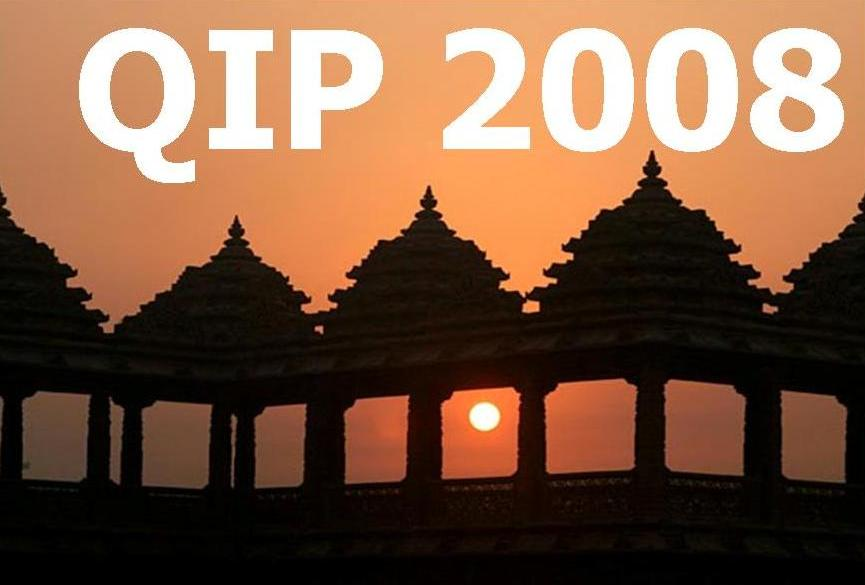

|
|
The Eleventh Workshop on
Quantum Information
Processing
New Delhi, December 17-21, 2007
|delhi><qip08|
|
General information |
Information for authors |
Program |
Talks |
Registration |
Practical information
General information

QIP 2008, to be held at the India International Centre, New
Delhi, India, is being organized by the Indian Association of Research in Computing
Science with support from the Indian Institute of Technology, New
Delhi, and the Tata Institute of
Fundamental Research, Mumbai.
Quantum information processing is the recasting of computer science in
a quantum mechanical framework. It improves on classical computers and
classical complexity bounds by making use of quantum mechanical
phenomena. After Peter Shor's 1994 discovery of efficient quantum
algorithms for factoring and the discrete log (threatening current
"classical" cryptography), the field has grown explosively and is now
one of the most active subfields of both computer science and physics.
QIP 2008 is the eleventh workshop on theoretical aspects of quantum
computing, quantum cryptography, and quantum information theory in a
series which started in Aarhus in 1998 and was held last year at
Brisbane.
QIP 2008, like its previous editions,
will feature invited talks, contributed talks and a poster session.
The invited talks will be chosen by the Steering Committee, and
the contributed talks by the program committee.
Other events:
QIP 2008 in New Delhi will immediately follow the 27th Annual Foundations of Software Technology
and Theoretical Computer Science conference (FSTTCS 2007,
December 12-15, 2007), which is being organised by the Indian Association
for Research in Computing Science at the same venue.
The
Workshop on Quantum Correlation and Quantum Computing
(QCQC 2007, 11--13 December 2007)
will be held at the Centre for Theoretical Studies, IIT Kharagpur,
Important dates
- submission for contributed talks: September 20, 2007
- acceptance notification: October 20, 2007
- poster submission deadline: November 15, 2007
- early registration deadline: November 15, 2007
Program committee
- Andris Ambainis, University of Latvia and University of Waterloo
- Dave Bacon, University of Washington
- Harry Buhrman, CWI, Amsterdam
- Richard Cleve, University of Waterloo and
Perimeter Institute (chair)
- Manny Knill, NIST, Boulder
- Ben Reichardt, Caltech
- Robert Raussendorf, Perimeter Institute
- Pranab Sen, Tata Institute of Fundamental Research, Mumbai
- Adam Smith, Penn State
- Barbara Terhal, IBM Research
- John Watrous, University of Waterloo
Local organizers
Steering Committee
- Keiji Matsumoto (NII, Tokyo)
- Cristopher Moore (University of New Mexico)
- Michael Nielsen (Perimeter Institute)
- John Preskill (California Institute of Technology)
- Jaikumar Radhakrishnan (TIFR, Mumbai)
- Peter Shor (Massachusetts Institute of Technology)
- Umesh Vazirani (UC Berkeley)
- Andreas Winter (University of Bristol)
- Ronald de Wolf (CWI, Amsterdam)
For any questions concerning the event, contact
Previous QIP workshops:
2007, Brisbane, Australia
2006, Paris, France
2005,
Massachusetts Institute of Technology, Cambridge
2004, Perimeter Institute
and Institute for Quantum Computing, Waterloo
2003,
MSRI, Berkeley
2002, IBM, Yorktown Heights
2001, CWI, Amsterdam
2000, CRM, Montreal
1999, Depaul, Chicago
1998, BRICS, Aarhus